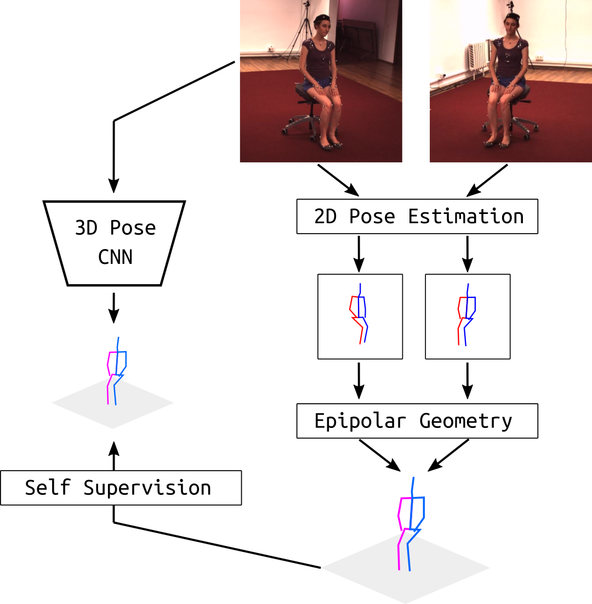

Training accurate 3D human pose estimators requires large amount of 3D ground-truth data which is costly to collect. Various weakly or self supervised pose estimation methods have been proposed due to lack of 3D data. Nevertheless, these methods, in addition to 2D ground-truth poses, require either additional supervision in various forms (e.g. unpaired 3D ground truth data, a small subset of labels) or the camera parameters in multiview settings. To address these problems, we present EpipolarPose, a self-supervised learning method for 3D human pose estimation, which does not need any 3D ground-truth data or camera extrinsics. During training, EpipolarPose estimates 2D poses from multi-view images, and then, utilizes epipolar geometry to obtain a 3D pose and camera geometry which are subsequently used to train a 3D pose estimator. We demonstrate the effectiveness of our approach on standard benchmark datasets i.e. Human3.6M and MPI-INF-3DHP where we set the new state-of-the-art among weakly/self-supervised methods. Furthermore, we propose a new performance measure Pose Structure Score (PSS) which is a scale invariant, structure aware measure to evaluate the structural plausibility of a pose with respect to its ground truth.
Muhammed Kocabas,
Salih Karagoz,
Emre Akbas
Computer Vision and Pattern Recognition (CVPR), 2019
project page
/
video
/
code
/
bibtex
@inproceedings{kocabas2019epipolar,
author = {Kocabas, Muhammed and Karagoz, Salih and Akbas, Emre},
title = {Self-Supervised Learning of 3D Human Pose using Multi-view Geometry},
booktitle = {The IEEE Conference on Computer Vision and Pattern Recognition (CVPR)},
month = {June},
year = {2019}
}
For any questions regarding this work, please contact the corresponding author at name.surname@tue.mpg.de